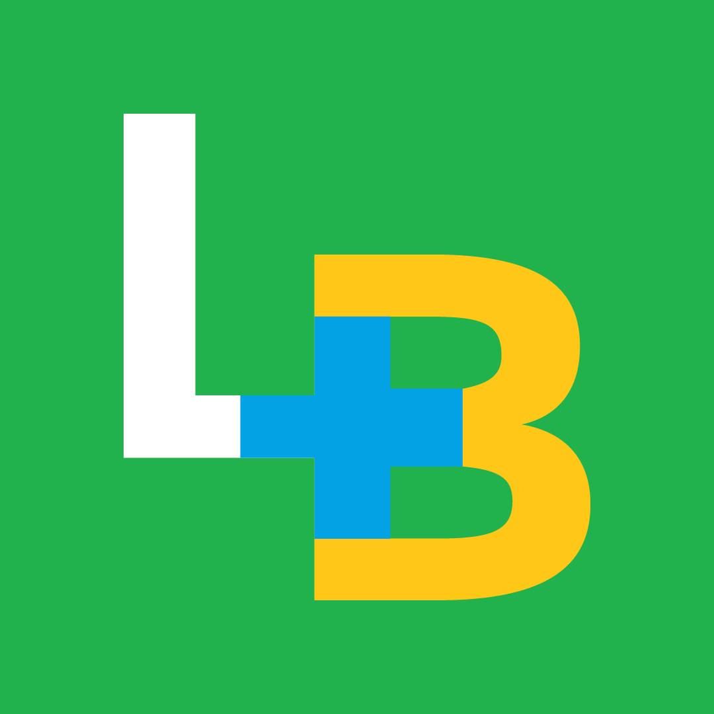

<title>Manual de Redes Licita Mais Brasil</title>
<meta name="claude:viewport-fit-sides" content="cover">
<link rel="preconnect" href="https://fonts.googleapis.com">
<link rel="stylesheet" href="https://fonts.googleapis.com/css2?family=Poppins:wght@400;500;600;700;800&family=Inter:wght@400;500;600;700&display=swap">
<style>
/* Layout: brand book em coluna única — régua lateral de seções no desktop, peças renderizadas em escala real reduzida */
:root{
  --verde:#21B24D;--azul:#03A2E4;--amarelo:#FFC718;
  --verde-texto:#157A35;--verde-profundo:#0F6B34;--azul-texto:#0270A6;
  --grafite:#28323B;--grafite-2:#55636E;--cinza:#F4F6F8;--borda:#E4E9ED;
  --bg:#FFFFFF;--fg:#28323B;--muted:#55636E;--surface:#F4F6F8;--line:#E4E9ED;
  --accent:#157A35;--accent-2:#0270A6;--chip:#FFF4CC;
  --f-tit:'Poppins',Arial,Helvetica,sans-serif;--f-txt:'Inter',Arial,Helvetica,sans-serif;
}
@media (prefers-color-scheme: dark){:root:not([data-theme="light"]){
  --bg:#141A1F;--fg:#E8EDF1;--muted:#A3B0BA;--surface:#1D252C;--line:#2C3740;
  --accent:#4FD27A;--accent-2:#4CC3F5;--chip:#3A3214;color-scheme:dark}}
:root[data-theme="dark"]{
  --bg:#141A1F;--fg:#E8EDF1;--muted:#A3B0BA;--surface:#1D252C;--line:#2C3740;
  --accent:#4FD27A;--accent-2:#4CC3F5;--chip:#3A3214;color-scheme:dark}
*{box-sizing:border-box}
body{background:var(--bg);color:var(--fg);font-family:var(--f-txt);font-size:16px;line-height:1.55;margin:0}
.wrap{max-width:1120px;margin:0 auto;padding-left:max(16px,env(safe-area-inset-left,0px));padding-right:max(16px,env(safe-area-inset-right,0px));padding-block:0 96px}
h1,h2,h3,h4{font-family:var(--f-tit);letter-spacing:-.01em;margin:0;text-wrap:balance;line-height:1.15}
h2{font-size:clamp(26px,3.4vw,36px);font-weight:800}
h3{font-size:20px;font-weight:700}
p{margin:0;max-width:68ch}
.kick{font-family:var(--f-tit);font-weight:600;font-size:13px;letter-spacing:.12em;text-transform:uppercase;color:var(--accent-2)}
.faixa{height:10px;background:linear-gradient(90deg,var(--verde) 0 40%,var(--azul) 40% 60%,var(--amarelo) 60% 100%)}
header.top{border-bottom:1px solid var(--line)}
header.top .wrap{padding-block:28px 40px;display:grid;gap:18px}
.logo-light{height:56px;width:auto;align-self:start}
.logo-dark{display:none}
@media (prefers-color-scheme: dark){:root:not([data-theme="light"]) .logo-light{display:none}:root:not([data-theme="light"]) .logo-dark{display:block}}
:root[data-theme="dark"] .logo-light{display:none}:root[data-theme="dark"] .logo-dark{display:block}
.hero-t{font-size:clamp(32px,5vw,54px);font-weight:800;max-width:20ch}
.hero-t em{font-style:normal;color:var(--accent)}
.lead{font-size:18px;color:var(--muted)}
nav.toc{display:flex;flex-wrap:wrap;gap:8px;margin-top:6px}
nav.toc a{font-family:var(--f-tit);font-weight:600;font-size:13px;color:var(--fg);text-decoration:none;border:1px solid var(--line);border-radius:999px;padding:6px 12px}
nav.toc a:hover,nav.toc a:focus-visible{border-color:var(--accent);outline:none;color:var(--accent)}
section{padding-top:72px;display:grid;gap:22px;scroll-margin-top:16px}
.sec-head{display:grid;gap:8px}
.sec-head .plus{display:inline-flex;align-items:center;gap:10px}
.plus::before{content:"";width:16px;height:16px;background:
  linear-gradient(var(--verde),var(--verde)) center/100% 34% no-repeat,
  linear-gradient(var(--verde),var(--verde)) center/34% 100% no-repeat}
.muted{color:var(--muted)}
.grid{display:grid;gap:16px}
.g2{grid-template-columns:repeat(auto-fit,minmax(min(100%,320px),1fr))}
.g3{grid-template-columns:repeat(auto-fit,minmax(min(100%,240px),1fr))}
.g4{grid-template-columns:repeat(auto-fit,minmax(min(100%,200px),1fr))}
.box{background:var(--surface);border-radius:14px;padding:20px;display:grid;gap:10px;align-content:start;min-width:0}
.box h4{font-size:16px;font-weight:700}
ul.clean{margin:0;padding:0;list-style:none;display:grid;gap:8px}
ul.clean li{padding-left:22px;position:relative}
ul.clean li::before{content:"+";position:absolute;left:2px;top:-1px;font-family:var(--f-tit);font-weight:800;color:var(--accent)}
.tbl{overflow-x:auto;border:1px solid var(--line);border-radius:14px}
table{border-collapse:collapse;width:100%;min-width:640px;font-size:14.5px}
th,td{text-align:left;padding:12px 14px;border-bottom:1px solid var(--line);vertical-align:top}
th{font-family:var(--f-tit);font-weight:600;font-size:13px;color:var(--muted);background:var(--surface)}
tr:last-child td{border-bottom:0}
td.num{font-variant-numeric:tabular-nums;white-space:nowrap}
.pill{display:inline-block;font-family:var(--f-tit);font-weight:600;font-size:12px;padding:3px 10px;border-radius:999px;white-space:nowrap}
.p-ok{background:#DDF5E4;color:#0F6B34}.p-warn{background:#FFF1C2;color:#6B5200}.p-bad{background:#FDE2E0;color:#8A1F17}
/* paleta */
.sw{border-radius:14px;overflow:hidden;border:1px solid var(--line);display:grid;min-width:0}
.sw .c{height:96px}
.sw .i{padding:12px 14px;display:grid;gap:2px;font-size:13px}
.sw .i b{font-family:var(--f-tit);font-size:15px}
.sw code{font-size:12.5px;color:var(--muted)}
/* tipografia */
.type{display:grid;gap:14px;padding:22px;border:1px solid var(--line);border-radius:14px}
.type .s1{font-family:var(--f-tit);font-weight:800;font-size:40px;line-height:1.1}
.type .s2{font-family:var(--f-tit);font-weight:700;font-size:24px}
.type .s3{font-family:var(--f-txt);font-size:16px}
.type small{font-size:12.5px;color:var(--muted);font-family:var(--f-txt)}
/* logos */
.lg{border-radius:14px;display:grid;place-items:center;padding:24px;min-height:140px;border:1px solid var(--line)}
.lg img{max-height:70px;width:auto}
.lg.sq img{max-height:110px}
.cap{font-size:13px;color:var(--muted);margin-top:8px}
.avatars{display:flex;flex-wrap:wrap;gap:20px;align-items:center}
.av{display:grid;justify-items:center;gap:8px;font-size:13px;color:var(--muted)}
.av img{width:96px;height:96px;border-radius:50%;border:1px solid var(--line);background:#fff;object-fit:cover}
/* pilares */
.pil{border-radius:14px;padding:18px;color:#fff;display:grid;gap:6px;min-width:0}
.pil b{font-family:var(--f-tit);font-size:17px}
.pil span{font-size:13.5px;opacity:.92}
.pil.k{color:var(--grafite)}
/* ===== Peças: canvas em px reais, escaladas para caber ===== */
.stage{width:100%;position:relative;overflow:hidden;border-radius:10px;box-shadow:0 10px 30px rgba(40,50,59,.14)}
.stage>.art{position:absolute;left:0;top:0;transform-origin:0 0;transform:scale(var(--s,.3))}
.piece{display:grid;gap:10px;min-width:0}
.piece .cap b{color:var(--fg);font-family:var(--f-tit)}
.art{font-family:'Inter',Arial,sans-serif;color:#28323B;overflow:hidden;position:relative}
.art h1,.art h2{font-family:'Poppins',Arial,sans-serif;letter-spacing:-.015em;line-height:1.08}
.art .dots{position:absolute;inset:0;background-image:radial-gradient(circle,rgba(40,50,59,.07) 3px,transparent 3px);background-size:44px 44px;pointer-events:none}
.art .dots.w{background-image:radial-gradient(circle,rgba(255,255,255,.09) 3px,transparent 3px)}
.art .ftr{position:absolute;left:0;right:0;bottom:0}
.art .ftr .bar{height:22px;background:linear-gradient(90deg,#21B24D 0 40%,#03A2E4 40% 60%,#FFC718 60% 100%)}
.art .tag{display:inline-block;font-family:'Poppins',sans-serif;font-weight:600;letter-spacing:.1em;text-transform:uppercase;border-radius:999px}
.art .ex{position:absolute;top:24px;right:24px;font:600 22px 'Inter',sans-serif;background:rgba(40,50,59,.75);color:#fff;padding:6px 14px;border-radius:8px;z-index:5}
.art .plusbig{position:absolute;pointer-events:none}
.art .plusbig::before,.art .plusbig::after{content:"";position:absolute;background:currentColor}
.art .plusbig::before{left:0;right:0;top:33%;height:34%}
.art .plusbig::after{top:0;bottom:0;left:33%;width:34%}
.safe{position:absolute;border:4px dashed rgba(255,255,255,.7);border-radius:6px;pointer-events:none}
.safe.d{border-color:rgba(40,50,59,.45)}
/* fluxo */
.flow{display:grid;gap:12px;grid-template-columns:repeat(auto-fit,minmax(min(100%,170px),1fr))}
.step{border:1px solid var(--line);border-radius:14px;padding:16px;display:grid;gap:6px;align-content:start;min-width:0}
.step .n{font-family:var(--f-tit);font-weight:800;font-size:13px;color:var(--accent-2)}
.step b{font-family:var(--f-tit);font-size:15.5px}
.step span{font-size:13.5px;color:var(--muted)}
.note{border-left:4px solid var(--amarelo);background:var(--chip);padding:14px 18px;border-radius:0 12px 12px 0}
.cal td:first-child{font-family:var(--f-tit);font-weight:600;white-space:nowrap}
footer{margin-top:80px}
@media (prefers-reduced-motion:no-preference){nav.toc a{transition:border-color .15s,color .15s}}
</style>

<header class="top">
  <div class="faixa"></div>
  <div class="wrap">
    
    
    <span class="kick">Manual de identidade · Redes sociais · v1 · outubro 2026</span>
    <h1 class="hero-t">Uma só cara em <em>Instagram, Facebook, YouTube, LinkedIn e X</em>.</h1>
    <p class="lead">Diagnóstico das redes, regras de marca, templates por linha editorial e o plano para gerar conteúdo todos os dias com aprovação humana.</p>
    <nav class="toc" aria-label="Seções">
      <a href="#diagnostico">Diagnóstico</a><a href="#cores">Cores</a><a href="#tipografia">Tipografia</a><a href="#logo">Logo e perfis</a><a href="#pilares">Linhas editoriais</a><a href="#templates">Templates</a><a href="#capas">Capas</a><a href="#voz">Voz</a><a href="#automacao">Automação</a><a href="#limites">Limitações</a><a href="#precisamos">O que precisamos</a>
    </nav>
  </div>
</header>

<main class="wrap">

<section id="diagnostico">
  <div class="sec-head"><span class="kick plus">01 · Diagnóstico</span><h2>Onde estamos hoje</h2>
  <p class="muted">Levantamento feito em 25/10/2026 nas páginas públicas de cada rede.</p></div>
  <div class="tbl"><table>
    <thead><tr><th>Rede</th><th>Público</th><th>Ritmo</th><th>O que funciona</th><th>Situação</th></tr></thead>
    <tbody>
      <tr><td><b>Instagram</b></td><td class="num">≈10,5 mil seguidores</td><td>Esporádico; reels, carrosséis e stories</td><td>Destaques organizados (Jurisprudência, Legislação, Ferramentas, A Plataforma, FAQ); temas práticos como carona em ata e PNCP</td><td><span class="pill p-warn">Visual inconsistente</span></td></tr>
      <tr><td><b>YouTube</b></td><td class="num">727 inscritos · 62 vídeos</td><td>Tutoriais em série; último há 4 dias</td><td>“Conheça a Plataforma” (1,3 mi de views) e “Cadastro Inicial do Fornecedor” (61 mil): tutorial resolve dor real</td><td><span class="pill p-warn">Sem padrão de miniatura</span></td></tr>
      <tr><td><b>Facebook</b></td><td class="num">45 seguidores</td><td>Repete o Instagram</td><td>Página ativa, post recente sobre carona em ata</td><td><span class="pill p-bad">Público mínimo</span></td></tr>
      <tr><td><b>LinkedIn</b></td><td class="num">59 seguidores</td><td>Último post há ~9 meses</td><td>Descrição institucional clara; canal certo para gestores e pregoeiros</td><td><span class="pill p-bad">Parado</span></td></tr>
      <tr><td><b>X</b></td><td class="num">@licitamaisbr</td><td>Conta nova, ligada em 25/10/2026</td><td>Bom para notícias rápidas, acórdãos e links de oportunidades</td><td><span class="pill p-warn">Começando</span></td></tr>
    </tbody>
  </table></div>
  <div class="grid g3">
    <div class="box"><h4>Cor de fundo fora da marca</h4><p class="muted">Boa parte do feed usa azul-marinho, que não existe na paleta. Ao lado, posts verdes, fotos com faixa amarela e cartazes de evento: o feed parece de várias marcas.</p></div>
    <div class="box"><h4>Três tipografias diferentes</h4><p class="muted">Títulos alternam entre fontes arredondadas, geométricas e condensadas. A marca já define Poppins e Inter; basta aplicar sempre.</p></div>
    <div class="box"><h4>Fotos geradas por IA com pessoas</h4><p class="muted">Funcionam para chamar atenção, mas enfraquecem a confiança num tema jurídico. Prefira telas reais da plataforma, ícones e a equipe de verdade.</p></div>
  </div>
</section>

<section id="cores">
  <div class="sec-head"><span class="kick plus">02 · Cores</span><h2>Verde domina, azul apoia, amarelo destaca</h2>
  <p class="muted">Proporção recomendada em cada peça: 60% fundo (branco, verde ou grafite), 30% texto, 10% destaque. No máximo duas cores vibrantes competindo.</p></div>
  <div class="grid g4">
    <div class="sw"><div class="c" style="background:#21B24D"></div><div class="i"><b>Verde Licita</b><code>#21B24D · cor dominante</code></div></div>
    <div class="sw"><div class="c" style="background:#03A2E4"></div><div class="i"><b>Azul Mais</b><code>#03A2E4 · apoio tecnológico</code></div></div>
    <div class="sw"><div class="c" style="background:#FFC718"></div><div class="i"><b>Amarelo Brasil</b><code>#FFC718 · só destaque</code></div></div>
    <div class="sw"><div class="c" style="background:#28323B"></div><div class="i"><b>Grafite</b><code>#28323B · texto e fundo escuro</code></div></div>
    <div class="sw"><div class="c" style="background:#0F6B34"></div><div class="i"><b>Verde Profundo</b><code>#0F6B34 · substitui o marinho</code></div></div>
    <div class="sw"><div class="c" style="background:#0270A6"></div><div class="i"><b>Azul Texto</b><code>#0270A6 · fundo de “Novidade”</code></div></div>
    <div class="sw"><div class="c" style="background:#157A35"></div><div class="i"><b>Verde Texto</b><code>#157A35 · destaque em texto</code></div></div>
    <div class="sw"><div class="c" style="background:#F4F6F8"></div><div class="i"><b>Cinza Claro</b><code>#F4F6F8 · cartões e fundos</code></div></div>
  </div>
  <div class="note"><b>Regras de contraste:</b> texto pequeno nunca em verde #21B24D ou azul #03A2E4 sobre branco (contraste abaixo de 3:1). Amarelo nunca como cor de texto sobre branco; use-o como fundo, com texto grafite. Texto branco só sobre Grafite, Verde Profundo, Azul Texto ou Verde #21B24D em títulos grandes.</div>
</section>

<section id="tipografia">
  <div class="sec-head"><span class="kick plus">03 · Tipografia</span><h2>Poppins para falar alto, Inter para explicar</h2></div>
  <div class="grid g2">
    <div class="type">
      <small>Título · Poppins ExtraBold 800</small>
      <div class="s1">Vai pegar carona em uma ata?</div>
      <small>Subtítulo · Poppins Bold 700</small>
      <div class="s2">Confira as 4 regras do PNCP</div>
      <small>Corpo · Inter Regular 400, entrelinha 1,5</small>
      <div class="s3">O órgão gerenciador publica o processo e a ata no PNCP antes de qualquer adesão.</div>
    </div>
    <div class="box">
      <h4>Escala para peças 1080 px</h4>
      <div class="tbl" style="border:0"><table style="min-width:0">
        <tr><td>Antetítulo</td><td class="num">Poppins 600 · 30 px · caixa alta · +10% espaçamento</td></tr>
        <tr><td>Título feed</td><td class="num">Poppins 800 · 84–96 px · até 3 linhas</td></tr>
        <tr><td>Título story</td><td class="num">Poppins 800 · 96–110 px · até 4 linhas</td></tr>
        <tr><td>Apoio</td><td class="num">Inter 400/500 · 36–40 px</td></tr>
        <tr><td>Dados</td><td class="num">Inter 600 · 34 px · números tabulares</td></tr>
      </table></div>
      <p class="muted" style="font-size:14px">Destaque de palavra-chave: mesma fonte, com fundo amarelo e texto grafite, ou texto amarelo sobre fundo escuro.</p>
    </div>
  </div>
</section>

<section id="logo">
  <div class="sec-head"><span class="kick plus">04 · Logo e perfis</span><h2>Qual versão usar em cada fundo</h2>
  <p class="muted">Use sempre os arquivos oficiais. Não redigite, gire, distorça ou recolora. Área de proteção mínima: a altura do “+”.</p></div>
  <div class="grid g3">
    <div><div class="lg" style="background:#fff"></div><p class="cap"><b>Branco:</b> horizontal colorido (preferencial)</p></div>
    <div><div class="lg" style="background:#21B24D"></div><p class="cap"><b>Verde:</b> Licita amarelo, + azul, Brasil branco</p></div>
    <div><div class="lg" style="background:#0270A6"></div><p class="cap"><b>Azul:</b> Licita amarelo, + verde, Brasil branco</p></div>
    <div><div class="lg" style="background:#FFC718"></div><p class="cap"><b>Amarelo:</b> Licita verde, + azul, Brasil branco</p></div>
    <div><div class="lg" style="background:#28323B"></div><p class="cap"><b>Grafite / foto:</b> versão branca</p></div>
    <div><div class="lg" style="background:#0F6B34"></div><p class="cap"><b>Verde Profundo:</b> mesma versão do verde</p></div>
  </div>
  <h3 style="margin-top:12px">Foto de perfil igual nas cinco redes</h3>
  <div class="avatars">
    <div class="av"><span><b>Padrão:</b> símbolo colorido</span></div>
    <div class="av"><span>Alternativa: fundo verde</span></div>
  </div>
  <p class="muted">Recomendação: o símbolo colorido sobre branco, que o Instagram já usa, em Facebook, YouTube, LinkedIn e X. Mesmo nome de exibição (“Licita Mais Brasil”), mesmo @licitamaisbrasil (no X, @licitamaisbr, porque o limite é de 15 caracteres) e a mesma bio curta: <i>“Plataforma de licitações eletrônicas. Simples para o fornecedor, segura para o órgão, transparente para o cidadão.”</i></p>
</section>

<section id="pilares">
  <div class="sec-head"><span class="kick plus">05 · Linhas editoriais</span><h2>Cada assunto tem uma cor fixa</h2>
  <p class="muted">Quem rola o feed reconhece o tipo de conteúdo antes de ler. O layout é sempre o mesmo: logo no topo, antetítulo, título, apoio, faixa tricolor no rodapé.</p></div>
  <div class="grid g3">
    <div class="pil" style="background:#28323B"><b>Jurisprudência TCU</b><span>Fundo grafite + amarelo. Vídeo semanal do Boletim, capa de reels e carrossel-resumo.</span></div>
    <div class="pil" style="background:#21B24D"><b>Oportunidades</b><span>Fundo verde + cartão branco. Um carrossel por dia com 3 a 8 processos publicados; as mesmas telas viram sequência de stories.</span></div>
    <div class="pil" style="background:#0270A6"><b>Novidades da plataforma</b><span>Fundo azul. Novos módulos, melhorias, integrações (PNCP, Autentique, IA no DFD/ETP).</span></div>
    <div class="pil k" style="background:#fff;border:1px solid var(--line)"><b>Legislação e dicas</b><span style="opacity:1;color:#55636E">Fundo branco + destaque amarelo. Lei 14.133/2021, PNCP, prazos, passo a passo.</span></div>
    <div class="pil" style="background:#0F6B34"><b>Institucional e eventos</b><span>Fundo verde profundo. Palestras, inspeções, comunicados, bastidores.</span></div>
    <div class="pil k" style="background:#FFC718"><b>Tutoriais (YouTube)</b><span style="opacity:1">Miniatura amarela com tela real da plataforma e número da parte da série.</span></div>
  </div>
</section>

<section id="templates">
  <div class="sec-head"><span class="kick plus">06 · Templates</span><h2>Peças-modelo em tamanho real</h2>
  <p class="muted">Cada peça abaixo é desenhada em pixels reais (1080 × 1080, 1080 × 1920, 1280 × 720) e só reduzida para caber na tela. Os textos são exemplos e não se referem a processos reais.</p></div>

  <div class="grid g2">
    <!-- FEED: Legislação -->
    <div class="piece">
      <div class="stage" data-w="1080" data-h="1080"><div class="art" style="width:1080px;height:1080px;background:#fff">
        <div class="dots"></div><span class="ex">EXEMPLO</span>
        <div class="plusbig" style="color:#FFC718;width:300px;height:300px;right:-60px;bottom:120px;opacity:.9"></div>
        <div style="position:absolute;left:80px;right:80px;top:70px;display:grid;gap:34px">
          
          <span class="tag" style="font-size:28px;color:#0270A6;padding:0">Legislação · Adesão à ata</span>
          <h1 style="font-size:96px;font-weight:800;color:#28323B">Vai pegar <span style="background:#FFC718;padding:0 12px">carona</span> em uma ata?</h1>
          <p style="font-size:40px;line-height:1.4;color:#55636E;max-width:780px">Confira as 4 regras do PNCP para o contrato do seu órgão ser publicado.</p>
        </div>
        <div class="ftr"><div style="display:flex;justify-content:space-between;align-items:center;padding:0 80px 34px;font:600 30px 'Poppins',sans-serif;color:#28323B"><span>@licitamaisbrasil</span><span style="color:#157A35">Arraste para o lado →</span></div><div class="bar"></div></div>
      </div></div>
      <p class="cap"><b>Feed · Legislação e dicas</b> · capa de carrossel 1080 × 1080</p>
    </div>

    <!-- FEED: Novidade -->
    <div class="piece">
      <div class="stage" data-w="1080" data-h="1080"><div class="art" style="width:1080px;height:1080px;background:#0270A6;color:#fff">
        <div class="dots w"></div><span class="ex">EXEMPLO</span>
        <div style="position:absolute;left:80px;right:80px;top:70px;display:grid;gap:34px">
          
          <span class="tag" style="font-size:28px;background:#FFC718;color:#28323B;padding:10px 24px;justify-self:start">Novidade na plataforma</span>
          <h1 style="font-size:92px;font-weight:800">Assine os relatórios do processo <span style="color:#FFC718">sem sair do sistema</span></h1>
          <p style="font-size:38px;line-height:1.4;opacity:.92;max-width:820px">Assinatura digital integrada à Licita Mais Brasil, com a tecnologia da Autentique.</p>
        </div>
        <div style="position:absolute;left:80px;bottom:110px;background:#21B24D;color:#fff;font:700 32px 'Poppins',sans-serif;padding:20px 40px;border-radius:999px">Veja como funciona →</div>
        <div class="ftr"><div class="bar"></div></div>
      </div></div>
      <p class="cap"><b>Feed · Novidades da plataforma</b> · 1080 × 1080</p>
    </div>

    <!-- STORY: Oportunidade -->
    <div class="piece">
      <div class="stage" data-w="1080" data-h="1920"><div class="art" style="width:1080px;height:1920px;background:#21B24D">
        <div class="dots w"></div><span class="ex">EXEMPLO</span>
        <div class="safe" style="left:20px;right:20px;top:250px;bottom:250px"></div>
        <div style="position:absolute;left:80px;right:80px;top:280px;display:grid;gap:40px">
          
          <span class="tag" style="font-size:32px;background:#FFC718;color:#28323B;padding:12px 28px;justify-self:start">Nova oportunidade</span>
          <div style="background:#fff;border-radius:36px;padding:56px;display:grid;gap:30px;box-shadow:0 20px 50px rgba(0,0,0,.18)">
            <div style="font:600 30px 'Poppins',sans-serif;color:#0270A6;letter-spacing:.06em;text-transform:uppercase">Pregão eletrônico · Menor preço</div>
            <h2 style="font-size:66px;font-weight:800;color:#28323B">Aquisição de materiais de expediente para as escolas municipais</h2>
            <div style="height:2px;background:#E4E9ED"></div>
            <div style="display:grid;grid-template-columns:auto 1fr;gap:18px 30px;font-size:34px;font-variant-numeric:tabular-nums">
              <span style="color:#55636E">Órgão</span><b>Prefeitura Municipal de Exemplo/UF</b>
              <span style="color:#55636E">Abertura</span><b>12/11/2026 · 09h</b>
              <span style="color:#55636E">Valor est.</span><b>R$ 184.500,00</b>
              <span style="color:#55636E">Processo</span><b>PE 045/2026</b>
            </div>
          </div>
          <div style="display:grid;gap:14px;color:#fff;text-align:center">
            <div style="font:800 46px 'Poppins',sans-serif">Participe pela Licita Mais Brasil</div>
            <div style="font:500 32px 'Inter',sans-serif;opacity:.95">licitamaisbrasil.com.br · Licitações Publicadas</div>
          </div>
        </div>
        <div class="ftr"><div class="bar" style="height:26px"></div></div>
      </div></div>
      <p class="cap"><b>Tela de oportunidade</b> · 1080 × 1920 no story; no carrossel, o mesmo cartão em 1080 × 1350. Uma capa (“5 novas oportunidades”), uma tela por processo e o CTA no fim. Tracejado = área segura (250 px livres no topo e na base).</p>
    </div>

    <!-- STORY/REELS: TCU -->
    <div class="piece">
      <div class="stage" data-w="1080" data-h="1920"><div class="art" style="width:1080px;height:1920px;background:#28323B;color:#fff">
        <div class="dots w"></div><span class="ex">EXEMPLO</span>
        <div class="plusbig" style="color:#FFC718;width:520px;height:520px;right:-140px;top:120px;opacity:.95"></div>
        <div style="position:absolute;left:80px;right:80px;top:280px;display:grid;gap:44px">
          
          <span class="tag" style="font-size:32px;color:#FFC718;padding:0">Jurisprudência TCU · Boletim semanal</span>
          <h1 style="font-size:108px;font-weight:800;margin-top:260px">Pesquisa de preços com <span style="color:#FFC718">uma única fonte</span> vale?</h1>
          <p style="font-size:40px;line-height:1.45;opacity:.9">O que o Tribunal decidiu e o que muda na rotina do pregoeiro.</p>
          <div style="display:flex;gap:20px;flex-wrap:wrap;font:600 30px 'Inter',sans-serif">
            <span style="border:3px solid rgba(255,255,255,.5);border-radius:999px;padding:12px 26px">Acórdão nº ____/2026</span>
            <span style="border:3px solid rgba(255,255,255,.5);border-radius:999px;padding:12px 26px">Plenário</span>
          </div>
        </div>
        <div class="ftr"><div style="text-align:center;font:600 30px 'Poppins',sans-serif;padding-bottom:300px;opacity:.85">@licitamaisbrasil</div><div class="bar" style="height:26px"></div></div>
      </div></div>
      <p class="cap"><b>Capa de reels · Jurisprudência TCU</b> · 1080 × 1920. A mesma arte vira a miniatura 1:1 do feed (o centro fica legível no recorte 1080 × 1350).</p>
    </div>
  </div>

  <div class="grid g2" style="margin-top:8px">
    <!-- YT thumb -->
    <div class="piece">
      <div class="stage" data-w="1280" data-h="720"><div class="art" style="width:1280px;height:720px;background:#FFC718">
        <div class="dots"></div><span class="ex">EXEMPLO</span>
        <div style="position:absolute;left:60px;top:56px;width:640px;display:grid;gap:22px">
          
          <h1 style="font-size:92px;font-weight:800;color:#28323B">Credenciamento em mercados fluidos</h1>
          <span class="tag" style="font-size:30px;background:#28323B;color:#fff;padding:10px 24px;justify-self:start">Parte 1 de 5</span>
        </div>
        <div style="position:absolute;right:-30px;top:110px;width:560px;height:420px;background:#fff;border-radius:22px;box-shadow:0 20px 50px rgba(0,0,0,.2);display:grid;place-items:center;transform:rotate(-3deg)">
          <div style="display:grid;gap:14px;width:460px">
            <div style="height:26px;width:60%;background:#E4E9ED;border-radius:6px"></div>
            <div style="height:70px;background:#F4F6F8;border-radius:10px;border-left:10px solid #21B24D"></div>
            <div style="height:70px;background:#F4F6F8;border-radius:10px;border-left:10px solid #03A2E4"></div>
            <div style="height:70px;background:#F4F6F8;border-radius:10px;border-left:10px solid #FFC718"></div>
            <div style="font:600 22px 'Inter',sans-serif;color:#55636E;text-align:center">aqui entra o print real da tela</div>
          </div>
        </div>
        <div class="ftr"><div class="bar" style="height:18px"></div></div>
      </div></div>
      <p class="cap"><b>Miniatura YouTube · Tutoriais</b> · 1280 × 720. Título com até 5 palavras; o canto inferior direito fica livre para a duração do vídeo.</p>
    </div>

    <!-- carrossel interno -->
    <div class="piece">
      <div class="stage" data-w="1080" data-h="1080"><div class="art" style="width:1080px;height:1080px;background:#F4F6F8">
        <span class="ex">EXEMPLO</span>
        <div style="position:absolute;left:80px;right:80px;top:80px;display:grid;gap:40px">
          <span class="tag" style="font-size:28px;color:#0270A6;padding:0">Regra 1 de 4</span>
          <h2 style="font-size:78px;font-weight:800;color:#28323B">O gerenciador publica a ata no PNCP</h2>
          <p style="font-size:38px;line-height:1.5;color:#28323B;max-width:860px">Sem a ata publicada pelo órgão gerenciador, o contrato decorrente da adesão não tem onde ser vinculado.</p>
          <div style="background:#FFC718;border-radius:24px;padding:30px 36px;font:600 34px 'Inter',sans-serif;color:#28323B;max-width:860px">Base legal: art. 86 da Lei 14.133/2021</div>
        </div>
        <div class="ftr"><div style="display:flex;justify-content:space-between;align-items:center;padding:0 80px 34px"><span style="font:600 30px 'Poppins',sans-serif;color:#157A35">2/6 →</span></div><div class="bar"></div></div>
      </div></div>
      <p class="cap"><b>Carrossel · página interna</b> · 1080 × 1080. Símbolo no lugar do logo completo; contador de páginas no rodapé.</p>
    </div>
  </div>
</section>

<section id="capas">
  <div class="sec-head"><span class="kick plus">07 · Capas</span><h2>Capas de perfil com a mesma mensagem</h2>
  <p class="muted">Frase única para as três capas: “Licitações eletrônicas simples, seguras e transparentes.” O tracejado mostra a área que aparece em todos os aparelhos.</p></div>
  <div class="grid" style="gap:24px">
    <div class="piece">
      <div class="stage" data-w="2560" data-h="1440"><div class="art" style="width:2560px;height:1440px;background:#21B24D">
        <div class="dots w"></div>
        <div class="safe" style="left:507px;top:508px;width:1546px;height:423px"></div>
        <div style="position:absolute;left:560px;top:540px;width:1440px;height:360px;display:flex;align-items:center;justify-content:space-between;gap:60px;color:#fff">
          
          <div style="display:grid;gap:14px;text-align:right"><div style="font:800 64px/1.1 'Poppins',sans-serif">Licitações eletrônicas<br>simples, seguras e transparentes</div><div style="font:500 38px 'Inter',sans-serif;opacity:.92">Novos tutoriais toda semana</div></div>
        </div>
        <div class="ftr"><div class="bar" style="height:40px"></div></div>
      </div></div>
      <p class="cap"><b>YouTube</b> · 2560 × 1440, área segura 1546 × 423</p>
    </div>
    <div class="grid g2">
      <div class="piece">
        <div class="stage" data-w="1128" data-h="191"><div class="art" style="width:1128px;height:191px;background:#0F6B34;color:#fff">
          <div class="dots w"></div>
          <div style="position:absolute;inset:0 40px 16px 360px;display:flex;align-items:center;justify-content:flex-end;font:800 34px/1.15 'Poppins',sans-serif;text-align:right">Licitações eletrônicas simples,<br>seguras e transparentes</div>
          <div class="ftr"><div class="bar" style="height:12px"></div></div>
        </div></div>
        <p class="cap"><b>LinkedIn</b> · 1128 × 191. A foto de perfil cobre o canto esquerdo, então o texto fica à direita.</p>
      </div>
      <div class="piece">
        <div class="stage" data-w="1640" data-h="624"><div class="art" style="width:1640px;height:624px;background:#21B24D;color:#fff">
          <div class="dots w"></div>
          <div class="safe" style="left:180px;top:60px;width:1280px;height:470px"></div>
          <div style="position:absolute;left:240px;right:240px;top:110px;display:grid;gap:30px">
            
            <div style="font:800 62px/1.1 'Poppins',sans-serif">Licitações eletrônicas simples,<br>seguras e transparentes</div>
          </div>
          <div class="ftr"><div class="bar" style="height:22px"></div></div>
        </div></div>
        <p class="cap"><b>Facebook</b> · 1640 × 624, conteúdo dentro de 1280 × 470 para o recorte do celular</p>
      </div>
      <div class="piece">
        <div class="stage" data-w="1500" data-h="500"><div class="art" style="width:1500px;height:500px;background:#28323B;color:#fff">
          <div class="dots w"></div>
          <div class="plusbig" style="color:#FFC718;width:260px;height:260px;left:120px;top:90px;opacity:.95"></div>
          <div style="position:absolute;left:520px;right:80px;top:0;bottom:22px;display:flex;flex-direction:column;justify-content:center;gap:18px">
            
            <div style="font:800 50px/1.12 'Poppins',sans-serif">Licitações eletrônicas simples,<br>seguras e transparentes</div>
            <div style="font:500 28px 'Inter',sans-serif;opacity:.85">Jurisprudência, oportunidades e novidades todos os dias</div>
          </div>
          <div class="ftr"><div class="bar" style="height:16px"></div></div>
        </div></div>
        <p class="cap"><b>X</b> · 1500 × 500. A foto de perfil cobre o canto inferior esquerdo, então o lado esquerdo leva só o “+” decorativo. Fundo grafite para diferenciar do Facebook.</p>
      </div>
    </div>
  </div>
</section>

<section id="voz">
  <div class="sec-head"><span class="kick plus">08 · Voz e legendas</span><h2>Tecnologia com confiança</h2></div>
  <div class="grid g2">
    <div class="box"><h4>Faça</h4><ul class="clean">
      <li>Benefício antes do recurso: “Publique o PCA em minutos” antes de “módulo de PCA”.</li>
      <li>Cite a base legal (Lei 14.133/2021, PNCP, acórdão) quando ela gera confiança.</li>
      <li>Fale com “você” e “seu órgão”. Frases curtas, voz ativa.</li>
      <li>Termine com um próximo passo: link, “salve este post”, “envie ao pregoeiro”.</li>
      <li>Escreva “Licita Mais Brasil” por extenso no texto. “Licita+Brasil” só no logo.</li>
    </ul></div>
    <div class="box"><h4>Evite</h4><ul class="clean">
      <li>Juridiquês sem tradução e blocos inteiros em caixa alta.</li>
      <li>Superlativos vazios (“a melhor do Brasil”) sem prova.</li>
      <li>Mais de 2 emojis por legenda e emoji como marcador de tópico.</li>
      <li>Fotos de pessoas geradas por IA em conteúdo jurídico.</li>
      <li>Opinar sobre decisão do TCU além do que o acórdão diz.</li>
    </ul></div>
  </div>
  <div class="box"><h4>Estrutura de legenda (todas as redes)</h4>
    <p><b>Linha 1:</b> gancho com a dor ou a pergunta. <b>2 a 4 linhas:</b> o essencial, com a base legal. <b>CTA:</b> uma ação. <b>Hashtags:</b> 3 a 5 fixas por linha editorial, por exemplo #licitações #lei14133 #pncp #pregoeiro #jurisprudenciatcu. No LinkedIn, a mesma ideia em tom mais técnico e sem hashtags em excesso.</p>
    <p><b>No X:</b> até 280 caracteres, contando o link. O fato principal em 1 ou 2 frases, o link da fonte ou da plataforma e no máximo 2 hashtags, sem emojis. Conteúdo longo, como jurisprudência, vai como gancho mais link; a imagem do carrossel pode acompanhar.</p>
  </div>
</section>

<section id="automacao">
  <div class="sec-head"><span class="kick plus">09 · Automação diária</span><h2>Do levantamento de temas à publicação</h2>
  <p class="muted">Um robô pesquisa, escreve e monta as peças todo dia de manhã. Uma pessoa da equipe aprova antes de qualquer publicação.</p></div>
  <div class="flow">
    <div class="step"><span class="n">1 · 06h00</span><b>Coleta</b><span>Boletim de Jurisprudência e Informativo de Licitações do TCU, DOU, PNCP, notícias do gov.br/Compras e dos TCEs, notícias e changelog da Licita Mais Brasil, oportunidades publicadas na plataforma.</span></div>
    <div class="step"><span class="n">2</span><b>Triagem</b><span>A IA descarta repetidos, classifica por linha editorial e dá nota de relevância para órgão e fornecedor.</span></div>
    <div class="step"><span class="n">3</span><b>Roteiro e legendas</b><span>Texto em linguagem simples, citando a fonte e o número do acórdão ou artigo, nas versões Instagram, LinkedIn e YouTube.</span></div>
    <div class="step"><span class="n">4</span><b>Arte e vídeo</b><span>Os templates desta página viram PNG (feed e stories) e MP4 (reels e shorts) com narração, legendas e trilha.</span></div>
    <div class="step"><span class="n">5 · 08h00</span><b>Aprovação</b><span>Prévia por e-mail ou WhatsApp com botões aprovar, editar, descartar. Nada sai sem aprovação.</span></div>
    <div class="step"><span class="n">6</span><b>Publicação</b><span>Agendamento via APIs oficiais (Meta, YouTube, LinkedIn) e registro do que saiu para não repetir.</span></div>
  </div>

  <h3 style="margin-top:12px">Calendário sugerido</h3>
  <div class="tbl cal"><table>
    <thead><tr><th>Dia</th><th>Instagram / Facebook</th><th>YouTube</th><th>LinkedIn</th><th>X</th></tr></thead>
    <tbody>
      <tr><td>Todo dia</td><td>1 carrossel de oportunidades (3 a 8), repetido em sequência de stories</td><td>—</td><td>—</td><td>Link das oportunidades do dia</td></tr>
      <tr><td>Segunda</td><td>Reels Jurisprudência TCU (boletim da semana)</td><td>Short com o mesmo vídeo</td><td>Post técnico do acórdão</td><td>Gancho + link do vídeo</td></tr>
      <tr><td>Terça</td><td>Carrossel Legislação e dicas</td><td>—</td><td>Mesmo carrossel em PDF</td><td>Dica em 1 frase + link</td></tr>
      <tr><td>Quarta</td><td>Novidade da plataforma</td><td>Tutorial (quando houver)</td><td>Novidade em tom institucional</td><td>Novidade + link</td></tr>
      <tr><td>Quinta</td><td>Reels curto “Você sabia?” (prazo, regra, erro comum)</td><td>Short</td><td>—</td><td>“Você sabia?” em texto</td></tr>
      <tr><td>Sexta</td><td>Resumo da semana em notícias de licitações</td><td>—</td><td>Resumo da semana</td><td>Resumo em fio curto</td></tr>
    </tbody>
  </table></div>

  <h3 style="margin-top:12px">Peças da solução</h3>
  <div class="tbl"><table>
    <thead><tr><th>Componente</th><th>Como fazemos</th><th>Custo estimado/mês</th></tr></thead>
    <tbody>
      <tr><td>Agendador e orquestração</td><td>Tarefa agendada do Claude, GitHub Actions ou um servidor pequeno (VPS)</td><td class="num">R$ 0 a 60</td></tr>
      <tr><td>Pesquisa e texto</td><td>API do Claude com busca na web e coletores das fontes oficiais</td><td class="num">≈ US$ 20 a 60</td></tr>
      <tr><td>Artes estáticas</td><td>Templates HTML desta página renderizados em PNG (Playwright)</td><td class="num">R$ 0</td></tr>
      <tr><td>Vídeo</td><td>Remotion (vídeo em código) + narração por voz sintética em pt-BR ou gravação da equipe</td><td class="num">US$ 0 a 25 (voz)</td></tr>
      <tr><td>Oportunidades</td><td>API da própria Licita Mais Brasil, lendo processos recém-publicados</td><td class="num">R$ 0</td></tr>
      <tr><td>Aprovação</td><td>Página de revisão + aviso por e-mail ou WhatsApp/Telegram</td><td class="num">R$ 0 a 30</td></tr>
      <tr><td>Publicação</td><td>Metricool (conectado em 25/10/2026): Instagram, Facebook, YouTube, página do LinkedIn e X na mesma marca</td><td class="num">plano Metricool</td></tr>
    </tbody>
  </table></div>
</section>

<section id="limites">
  <div class="sec-head"><span class="kick plus">10 · Limitações</span><h2>O que pode travar e como contornar</h2></div>
  <div class="tbl"><table>
    <thead><tr><th>Limitação</th><th>Impacto</th><th>Contorno</th></tr></thead>
    <tbody>
      <tr><td><b>Stories pela API do Instagram</b> não aceitam figurinhas (link, enquete, menção)</td><td>O story de oportunidade sai sem o botão de link clicável</td><td>Publicar automático com o endereço escrito na arte, ou o robô deixa pronto e a equipe adiciona o link no app (1 minuto)</td></tr>
      <tr><td><b>Músicas do Instagram</b> não podem ser usadas via API</td><td>Reels automáticos sem trilha da biblioteca</td><td>Trilha livre de direitos embutida no vídeo</td></tr>
      <tr><td><b>Limite de publicações</b> por conta via API (cerca de 100 a cada 24 h, confirmar na conta)</td><td>Nenhum no ritmo proposto</td><td>—</td></tr>
      <tr><td><b>YouTube:</b> cota diária da API (10 mil unidades, ≈ 6 uploads/dia) e vídeos ficam privados até o app passar pela auditoria do Google</td><td>Atraso de algumas semanas no início</td><td>Pedir a auditoria no primeiro dia; enquanto isso, upload manual</td></tr>
      <tr><td><b>LinkedIn:</b> publicar como página exige aprovação do app no programa de parceiros</td><td>Pode levar semanas ou ser negado</td><td>Usar um agendador já aprovado pelo LinkedIn (como Buffer ou mLabs) ou publicar manualmente</td></tr>
      <tr><td><b>Conteúdo jurídico gerado por IA</b> pode errar número de acórdão, artigo ou interpretação</td><td>Risco de imagem e de informação errada a órgãos públicos</td><td>Robô só cita o que está no texto da fonte, anexa o link oficial; aprovação humana obrigatória</td></tr>
      <tr><td><b>Fontes sem API</b> (alguns TCEs e portais) mudam o site sem aviso</td><td>Coleta falha em silêncio</td><td>Alerta quando uma fonte não retorna nada; priorizar RSS e APIs oficiais (PNCP, DOU/INLABS)</td></tr>
      <tr><td><b>Vídeo com apresentador</b> não é automatizável</td><td>O vídeo semanal do TCU continua dependendo de gravação</td><td>Robô entrega roteiro, letreiros e cortes; ou versão narrada por voz sintética nos shorts</td></tr>
      <tr><td><b>Este computador</b> não tem Node.js, Python nem ffmpeg</td><td>Não dá para renderizar PNG/MP4 aqui ainda</td><td>Instalar as três ferramentas ou rodar tudo na nuvem</td></tr>
    </tbody>
  </table></div>
</section>

<section id="precisamos">
  <div class="sec-head"><span class="kick plus">11 · O que precisamos de vocês</span><h2>Para começar a automação</h2></div>
  <div class="grid g2">
    <div class="box"><h4>Acessos e contas</h4><ul class="clean">
      <li>Instagram como conta profissional (Empresa) vinculada à página do Facebook, no Meta Business Suite.</li>
      <li>Um app no Meta for Developers com as permissões de publicação de conteúdo.</li>
      <li>Projeto no Google Cloud com a YouTube Data API ativada, e a conta dona do canal.</li>
      <li>Admin da página no LinkedIn, ou decisão de usar um agendador.</li>
      <li>Chave da API do Claude (Anthropic) e, se houver narração, de um serviço de voz.</li>
    </ul></div>
    <div class="box"><h4>Conteúdo e decisões</h4><ul class="clean">
      <li>Acesso à API da plataforma para listar processos recém-publicados (quais campos podem aparecer).</li>
      <li>Onde ficam as novidades da plataforma: a página de notícias basta, ou haverá um registro interno de versões.</li>
      <li>Quem aprova e por qual canal (e-mail, WhatsApp, Telegram).</li>
      <li>Vídeo do TCU: seguir com apresentador ou testar narração sintética.</li>
      <li>Onde rodar: tarefa agendada aqui no Claude, GitHub Actions ou servidor próprio.</li>
    </ul></div>
  </div>
</section>

<footer>
  <div class="faixa"></div>
  <p class="muted" style="padding-top:16px;font-size:13px">Licita Mais Brasil · licitamaisbrasil.com.br · @licitamaisbrasil · 0800 591 6173</p>
</footer>
</main>

<script>
(function(){
  const fit=()=>document.querySelectorAll('.stage').forEach(st=>{
    const w=+st.dataset.w,h=+st.dataset.h,s=st.clientWidth/w;
    st.style.height=(h*s)+'px';st.firstElementChild.style.setProperty('--s',s);
  });
  fit();
  if('ResizeObserver' in window){const ro=new ResizeObserver(fit);document.querySelectorAll('.stage').forEach(s=>ro.observe(s));}
  else addEventListener('resize',fit);
})();
</script>
